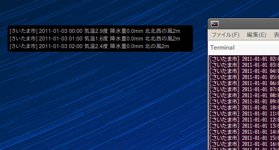

〜2011年1月上旬〜
2001年から始めてたこの日記もとうとう10年経った。
たぶん抜けはないと思うんだけどどうだろう。
% ls 20*/*.hnf | wc -l 3653
365*10とうるう年が2004,2008で2日だから3652で、今日の分を入れると3653で合ってる!
すげーな、俺。よくぞ曲がり形にも毎日10年続けたよ。まあ、かなり強引な更新ではあったが。
だんだん改良されてる。専用の.vimrcを読むようになったんだな。
% gem-trunk update vimgolf Updating installed gems Updating vimgolf ------------------------------------------------------------------------------ Thank you for installing vimgolf-0.2.0. 0.1.3: custom vimgolf .vimrc file to help level the playing field 0.2.0: proxy support, custom diffs + proper vimscript parser/scoring For more information, rules & updates: http://vimgolf.com/about ------------------------------------------------------------------------------ Successfully installed vimgolf-0.2.0 Gems updated: vimgolf Installing ri documentation for vimgolf-0.2.0... Installing RDoc documentation for vimgolf-0.2.0...
いつのまにか自分のエントリーが消せるようになった。
これいいね。恥ずかしい解とか消した。
diffも見辛いのでDIFF='diff -U1' vimgolfでaliasにしとくか。
いろいろ試しているが、なんかよくわからない挙動するときがある。
Pythonでしか書けないのかな。
そうか。単にテキストを表示するだけならOutputでやらせればいいのか。
でもこれもなんかうまいこと動かない。うーむ。tail -3にしたらいけた。
なんだろうな。

もうそろそろ冬休みも終わろうというのにきのこ本を読むの忘れてるよ。
マンガは冬休み中数えてみると60冊ほど読んでた。
長い休みも今日で終わり。たぶん。
git fooすると/usr/lib/git-core/とか決められたところにあるgit-fooが呼ばれるわけだけど、
PATHの中も探すので適当に~/bin/git-fooを作るとそれが呼ばれる。
golfしてるときはメッセージにサイズを残してるのでgit-golfを作ってみた。
#! /bin/sh git add -f "$@" now=`date +"%Y-%m-%d %X"` for i; do git commit -m "$now: `wc -c<$i`B" "$i" done
.gitconfigだとなんかいろいろと面倒なんだよね。
タブの数が30個ぐらいになるとどこにgmailがあったか探すのが大変なので早速入れてみた。
XUL/MigemoとCtrl+Shift+Fがぶつかるがどっちも変更できそうにない。
XUL/MigemoはCtrl+FだけのはずだがShift有無は無視されるようだ。
しかたないのでXUL/Migemoはしばらくdisableで。
久し振りの出社でマウスをいじったら軽すぎて笑った。
まだコードありだから電池も入ってないしなあ。
なんかこう重みがないとねらいが定まらないとは言わないが、
違和感ありまくり。2週間ほどでこんなに慣らされてしまうのか。
1900通ほど。なぜか大分減った。
rvmで更新した。
% rvm upgrade rbx-1.2.0 rbx-1.1.0
Are you sure you wish to upgrade from rbx-1.1.0-20100923 to rbx-1.2.0-20101221? (Y/n):
Installing new ruby rbx-1.2.0-20101221
rbx-1.2.0-20101221 installing #dependencies
rbx-1.2.0-20101221 #downloading (rubinius-1.2.0-20101221.tar.gz), this may take a while depending on your connection...
% Total % Received % Xferd Average Speed Time Time Time Current
Dload Upload Total Spent Left Speed
100 8383k 100 8383k 0 0 469k 0 0:00:17 0:00:17 --:--:-- 498k
rbx-1.2.0-20101221 - #extracting
rbx-1.2.0-20101221 - #configuring
rbx-1.2.0-20101221 - #compiling
rbx-1.2.0-20101221 - adjusting #shebangs for (erb).
rbx-1.2.0-20101221 - #importing default gemsets (/home/eban/.rvm/gemsets/)
Migrating gems from rbx-1.1.0-20100923 to rbx-1.2.0-20101221
Are you sure you wish to MOVE gems from rbx-1.1.0-20100923 to rbx-1.2.0-20101221?
This will overwrite existing gems in rbx-1.2.0-20101221 and remove them from rbx-1.1.0-20100923 (Y/n):
Moving gemsets...
Moving rbx-1.1.0-20100923 to rbx-1.2.0-20101221@rbx-1.1.0-20100923
Making gemset rbx-1.2.0-20101221@rbx-1.1.0-20100923 pristine.
Moving rbx-1.1.0-20100923@global to rbx-1.2.0-20101221@global
Making gemset rbx-1.2.0-20101221@global pristine.
Do you wish to move over aliases? (Y/n):
Do you wish to move over wrappers? (Y/n):
Do you also wish to completely remove rbx-1.1.0-20100923 (inc. archive)? (Y/n):
Successfully migrated rbx-1.1.0-20100923 to rbx-1.2.0-20101221
Upgrade complete!
それにしてもrvm upgradeはもうちょっとなんとかならないもんか。
せめてrvm upgrade rbx-1.2.0ぐらいでrbx-1.1.0の指定までさせる必要ないと思うんだけど。
InstapaperからRead It Laterへインポートが可能になった。
htmlで保存すればok。APIでやろうと思っていたけど、これでInstapaper捨てられるな。
info sedしたらいつの間にかzなんてコマンドが追加されてた。
`z'
This command empties the content of pattern space. It is usually
the same as `s/.*//', but is more efficient and works in the
presence of invalid multibyte sequences in the input stream.
POSIX mandates that such sequences are _not_ matched by `.', so
that there is no portable way to clear `sed''s buffers in the
middle of the script in most multibyte locales (including UTF-8
locales).
なんとも不思議なコマンドだな。
dでいいじゃんと思ったが次の行を読みに行っちゃうからだめか。
あんまりボタンは増やしたくないからコンテキストメニューのほうを使ってたんだけど、
更新したら消えてしまった。
履歴を見ると
Added: Undo close tab by middle click on tab bar
という怪しい記述があるが、なんだこれ。
まあ、素直にボタンを表示させとくか。
ひどい問題だな。結局
この人が出題したんだと思うけど、
ゴルフ場サーバのls /の結果が元になってる。